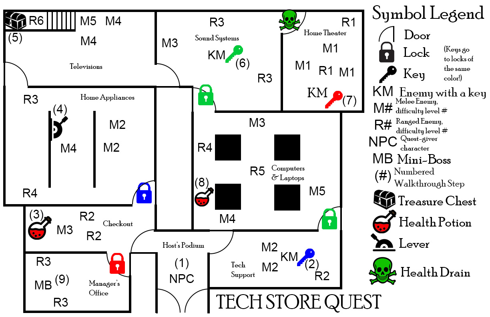

Gavin Nathaniel Bayer
Portfolio of Work
RPG Dungeon Design

I designed a map for a comedic RPG themed around fighting a platoon of corporate employees forcefully taking over a small town tech store. The map was carefully designed in such a way that a clean loop of the entire dungeon was possible, with minimal re-visits to rooms, but a degree of exploration and freedom was also present if going in blind. This means that the level is not frustratingly linear on a first-time playthrough, but not labyrinthine and tiring on a replay.